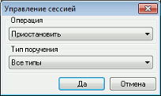
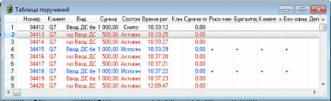
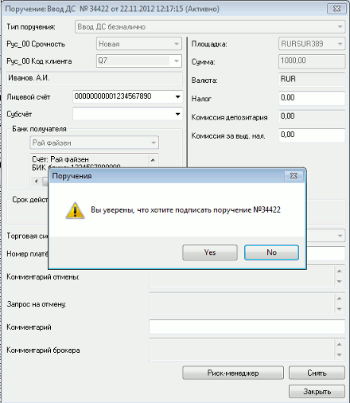
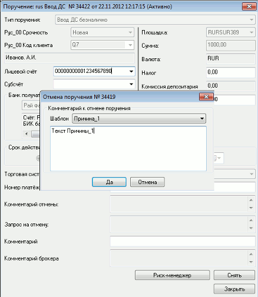
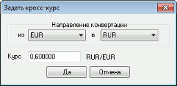

Система QUIK поддерживает работу с неторговыми поручениями, такими, как
ввод/вывод средств, переводы между площадками. Принцип их использования описан в
разделе «Неторговые операции и отчеты». Прием и обработка поручений от клиентов осуществляется сотрудником брокера
через Рабочее место QUIK с правами менеджера. Пользователь с правами менеджера
имеет право на: Неторговые поручения обрабатываются системой QUIK
аналогично торговым транзакциям. Для того чтобы пользователи могли отправлять
поручения брокеру, должна
быть открыта сессия по классу "Неторговые поручения". Состояние сессии
отображается в колонке "Сессия" Таблицы текущих торгов. Если необходимо временно
остановить прием поручений (например, по техническим причинам), брокер может
приостановить сессию для всех типов поручений или выбрать определенный
тип поручения, для которого будет приостановлена сессия, выполнить
необходимые процедуры, а затем возобновить сессию.  Операции, доступные в окне «Управление сессией»: Обработка поручений выполняется из «Таблицы
поручений». В этой таблице отображаются поручения всех типов и состояние их
обработки специалистами брокера. Двойным нажатием правой кнопки мыши на строке
можно открыть поручение и посмотреть его параметры. Статус поручения выделен
цветом шрифта:  Для исполнения поручения необходимо подтверждение (подпись) уполномоченных
сотрудников брокера. Последовательность проверки и количество необходимых
подписей настраивается на сервере QUIK для каждого вида поручений. Чтобы подписать поручение, необходимо:  В результате на соответствующей строке в
«Таблице поручений» появится отметка «+» в колонке с ролью данного сотрудника
(например, «Риск-менеджер»), уведомляющая о наличии подписи. Для осуществления групповой подписи надо в таблице поручений выбрать пункт
контекстного меню «Подписать все поручения». Далее, в появившейся форме выбора
подписей выбрать нужную подпись и нажать кнопку «Подписать». После нажатия
кнопки «Подписать» будет осуществлен поиск поручений, которым требуется данная
подпись. Найденные поручения подписываются с проверкой доступности ресурсов, как
и при одиночной подписи. Если поручение клиента не может быть исполнено, оно должно быть отклонено
сотрудником брокера с указанием причины. Для этого необходимо: В открывшемся окне «Комментарий к отмене поручения… »
написать причину отказа, которая будет сохранена в данном поручении в поле
«Комментарий отмены». Возможно заполнить причину отмены выбором шаблона из справочника «Причины отмены». По умолчанию шаблон
не выбран. Текст причины можно изменять в форме отмены поручения.
 В результате поручение в таблице примет состояние
«Снято». При этом дальнейшая обработка поручения прекращается. Подпись поручения можно отменить, выбрав один из пунктов контекстного меню
таблицы поручений: Также подпись можно отменить, открыв форму поручения и нажав кнопку
«Отозвать». Поручение, имеющее все необходимые подписи, меняет статус на «Исполнено». При
этом происходит изменение суммы заблокированных средств и доступных лимитов.  Данное действие позволяет
изменить кросс-курс валют, используемый в поручениях типа «Конвертация валют».
Настройки в данном окне: Для закрытия окна без сохранения изменений нажмите кнопку
«Cancel».Назначение
Управление сессией
меню Расширения /
Неторговые поручения / Управление сессией
Обработка поручений
Подписание поручения
Групповая подпись поручений
Отклонение поручения
Отмена подписи
Исполнение поручения
Изменение кросс-курса валют
меню Расширения / Неторговые поручения
/ Задать кросс-курс...